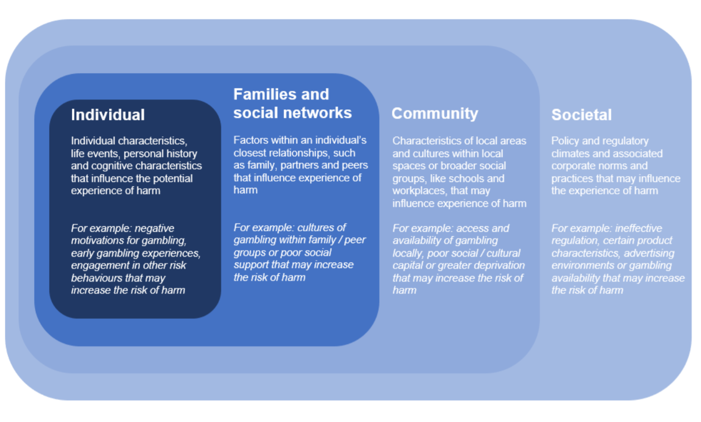
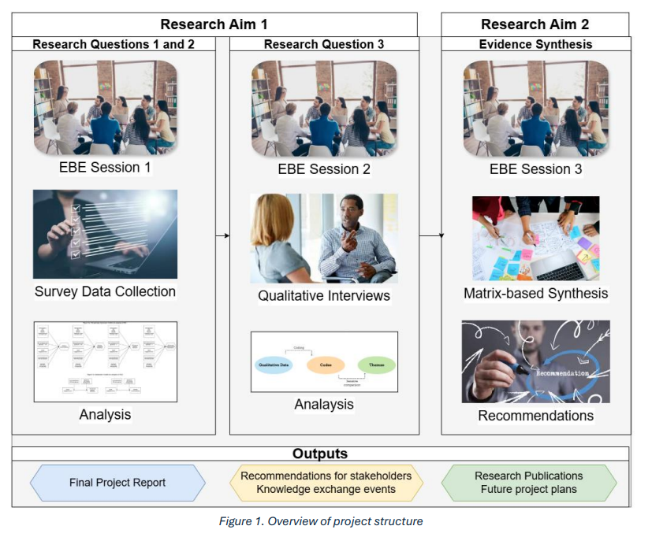

The Cognitive Neuroscience of Risk and Gambling Behaviour
A multidimensional approach to understanding Gambling Harms
Aims of this talk
To outline a developing research programme on the cognitive neuroscience of gambling harms
To explore a currently active project on the role of social identity and the normalisation of gambling in sports groups
To discuss some planned research and future directions
Background and Context
The multi-dimensional nature of gambling harms

The regulatory context
The failure of “soft friction”
Cognitive knowledge is used for exploitative purposes - could be used positively
“Self-exclusion” failure and cue reactivity
Need for behavioural measures of harm that assess risk-taking behaviour
The social context
Increasing prevalence of gambling advertisement
Normalisation (Norm-congruence) of gambling as a part of sports engagement (Duggan and Mohan 2022; Jetten et al. 2017)
The symbolic construction of sports betting (Lopez-Gonzalez, Griffiths, and Jimenez-Murcia 2021)
The research silos
Recent review of interventions for treatment of harmful gambling found 8 studies, all of which were retrospective - no experimental work (Seel et al. 2024)
We can identify neural deficits linked to gambling disorder (prefrontal-stratial dysregulation) but there is a call for “new interventions” which incorporate this knowledge (Raimo et al. 2021)
Behavioural intervention research calls for further understanding of the neurobiological changes that take place with interventions (Schwebel, Korecki, and Witkiewitz 2020)
The Research Programme

Clinical Vulnerabilities
Doctoral Work: Cognitive Inhibition and Cognitive Flexibility as moderators of Depression and Problem Gambling. Ema Abir (DClin)
Doctoral Work: How risk imperception and reward magnitude moderate the relationship between subclinical hypomania and decision making. David Minchella (DClin)
Doctoral Work: The role of impulsivity and working memory in the the relationship between subclinical hypomania and decision making. Alana Gadsby (DClin)
Completed Study Wilson, C.J., Medimorec, S., Naganathan, J et al. (in prep) Risk Imperception, Not Reward Focus Underlies Poor Gambling Decisions in Subclinical Hypomania.
Study: Anxiety & Decision-Making. Investigating how anxiety specifically impacts decision quality vs. risk-taking. Summer Hall
Cognitive Mechanisms
Published Study: Wilson (2026) demonstrated that cognitive adaptations (construal mindset) can influence neural risk sensitivity in the Lateral Pre-frontal Cortex and affect risk-taking behaviour
- This is an proof-of concept experimental demonstration of the “hot-to-cool” shift that the gambling commission were advocating
Study: Short-Form Video Adverts. Testing if exposure to gambling adverts in short-form video content alters risk-taking behaviour. Theia Morgan
Focus: “It’s part of the sport” project

Project Team

Project Background
Discourse around reducing harms is still heavily focused on the individual (Marko et al. 2022)
Failure of research to epistemologically consider the broader context in which gambling takes place, has led to too much focus on individual pathology (Borrell and Boulet 2005)
“urgent need to identify predictors of disordered gambling in people who gamble recreationally […] particularly across relationship [… ] domains” (Bowden-Jones et al. 2022)
The Social Component
Socialisation through family or peer groups is a common starting point in the initiation of gambling behaviour (Reith and Dobbie 2011)
Problem gambling has been found to be associated with conformity to group norms (Atte Oksanen et al. 2021)
It is potentially much more valuable to understand how identification with other social groups could lead to gambling.
- to engage with them at any level (e.g., amateur players or fan) is to be exposed to gambling (Constandt et al. 2022)
Research Questions
We theorise that gambling has started to become norm-congruent behaviour within these social groups, which in-turn makes it an acceptable, or even expected, behaviour for those who want to see themselves as a prototypical group member (Jetten et al. 2017)
Research Question 1: Which aspects of gambling behaviour are linked to social identification with sports groups?
Research Question 2: Is the relationship between sports engagement and gambling behaviour moderated by social identification with sports groups?
Research Question 3: How do people experience the normalisation of gambling within sports social groups?
Methodology
Mixed methods approach
WP1: a cross-sectional survey-based study
WP 2: a qualitative study.
WP 3: a synthesis of these ideas into recommendations for stakeholders
Project Structure

Work Package 1

Work Package 2: Interviews
Focusing on the experience of normalisation of gambling
Topics covered:
Sports engagement
Individual level; survey: attitudes, gambling behaviour, problem gambling symptoms
Families, peers; survey: conformity, social identity
Community/organisational level; survey: sports engagement, group identity
Societal/commercial; survey: advertising, outcome expectancies
Interview data will be analysed using Framework Analysis (Gale et al. 2013)
Progress and current Status
Targeted recruitment at sports organisations and fan groups
Survey data collection (current n = 120)
Interviews currently being scheduled
Why does this work matter?
UKGC is shifting to “safer by design” requirements for operators. “Soft friction” doesn’t work. Need to establish evidence base for what does.
Multi-dimensional models of gambling harms call for integration of behavioural, cognitive, neural and social mechanisms. A programme of research is needed to connect these.
We are working to understand:
How cognitive processes affect gambling behaviour specifically
What are the specific neural mechanisms involved
How trait-level social constructs (e.g., fan identity) moderate the link between community and behaviour
What’s next?
The Next Challenge: Can we use this understanding of process to engineer better harm-reduction tools?
The goal: To move beyond describing harm to preventing it, developing neuro-informed frameworks for safer gambling environments.
Thank you, questions?
References
Social Context
Funded Project: “It’s part of the sport”: Exploring how social identification with sports groups predicts gambling behaviour and how people experience the normalisation of gambling with sports groups.
Study: Sports Engagement & Implicit Associations. Testing if high sports engagement predicts a stronger implicit cognitive association between “Sport” and “Gambling.” Thomas Wilkinson
Review: Systematic Review on the efficacy of gambling harms policy-related interventions. w/ Dr. Andrew Richardson